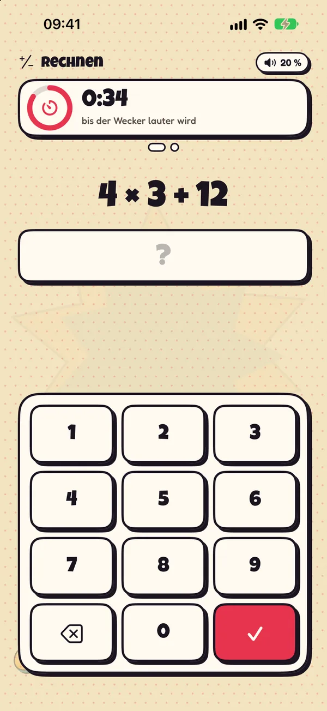
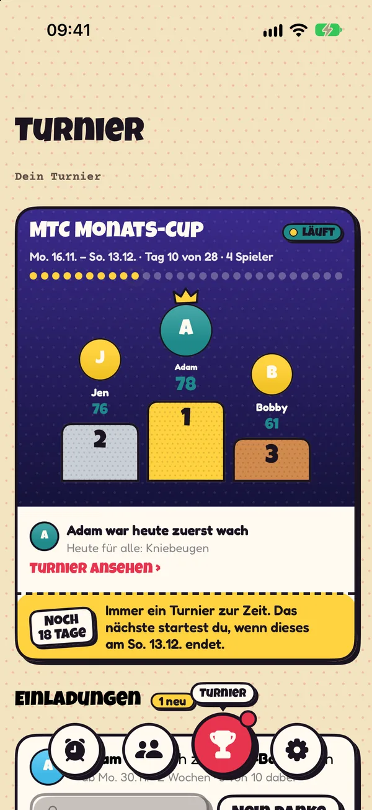
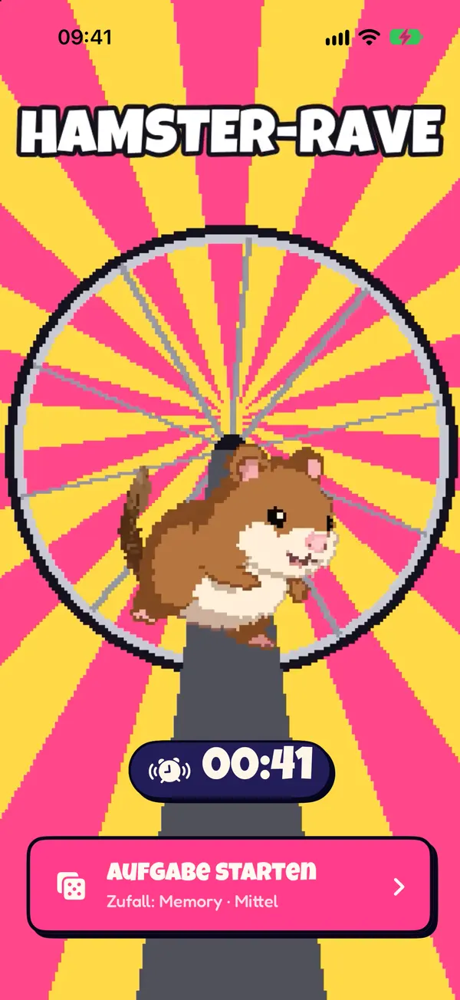
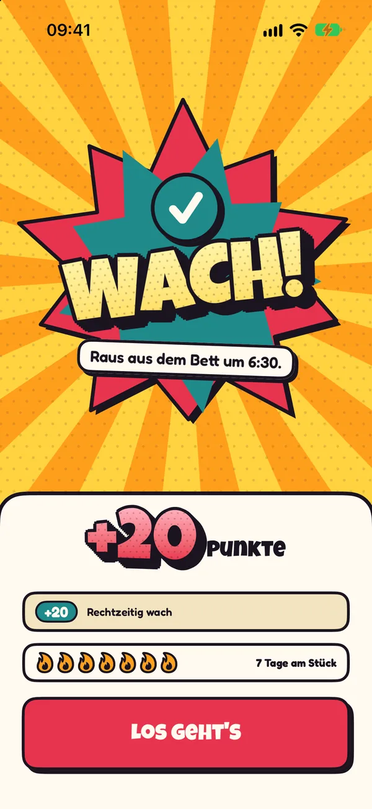

Erst lösen,dann aus.
So läuft dein Morgen mit GET UP!: Der Wecker lässt sich nicht wegdrücken. Er hört erst auf, wenn die Aufgabe geschafft ist.

Wecker stellen
Uhrzeit wählen, Aufgabe wählen, schlafen gehen. Wer mag, lässt den Zufall entscheiden.
Es klingelt
Auch über dem Sperrbildschirm. Der Wecker hält die Lautstärke oben. Leiser drücken bringt dich nicht schneller raus.
Lösen, dann Ruhe
Erst nach der Aufgabe ist der Wecker aus. Auf Wunsch fragt der Wach-Check fünf Minuten später noch einmal nach.
31 Aufgabenstatt Snooze.
Für den Kopf, für die Beine oder mit Beweisfoto. Je länger deine Streak, desto schwerer werden sie. Tipp eine an:
Außerdem: Flaggen-Quiz, Hampelmänner, Liegestütze, Tanzen, Bett fotografieren, Barcode und Zufall.
Für den Kopf
Rechnen, Bombe entschärfen, Simon sagt, Memory, Flaggen-Quiz oder einen Satz nachsprechen.
Zum Aufstehen
Kniebeugen, Hampelmänner, Liegestütze oder Tanzen. Die Kamera zählt mit, ausgewertet wird direkt auf deinem Handy.
Mit Beweisfoto
Das gemachte Bett, der Himmel, ein Barcode, den du festgelegt hast, oder ein Ort, den du vorher fotografiert hast.
Gegen deineFreunde.
- Füg Freunde per Code, Link oder QR-Code hinzu.
- Nach dem Aufstehen zeigt ihr euch ein Selfie und seht, wer schon wach ist.
- Starte ein Turnier mit bis zu 9 Freunden, über 1, 2 oder 4 Wochen.
- Wer zuerst wach ist, schickt den anderen eine Sprach- oder Videonachricht zum Klingeln und darf allen, die noch schlafen, eine Aufgabe zuteilen.
- Am Ende warten Podest, Krone und Medaillen. Und die Revanche.

GenialeKlingeltöne.
Über 40 Wecktöne, von klassisch bis laut. Dazu Meme-Videos, die beim Klingeln laufen: Schrei-Ziege, Hamster-Rave, Klassik-Katze. Außerdem Power-Nap und eine Erinnerung, wann es Zeit fürs Bett ist.
Hamster-Rave, Schrei-Ziege & 40 mehr

+20fürs Aufstehen.
Wer rechtzeitig aus dem Bett kommt, sammelt Punkte und baut seine Streak aus. Jeder Morgen zählt, für dich und im Turnier.

Dein Wecker,dein Stil.
Get Up Pro
Ohne Pro gibt es den Rechenwecker. Get Up Pro schaltet alle 31 Aufgaben, Zufall, Freunde und Turniere frei, als Monatsabo, Jahresabo (für Neukunden mit Gratis-Test) oder Einmalkauf ohne Abo.
Power-Nap und Schlafenszeit
Ein kurzer Nap mit Wecker und eine Erinnerung, wann es Zeit fürs Bett ist. Damit der nächste Morgen leichter wird.
iPhone
Ab iOS 26. Klingelt über dem Sperrbildschirm und in der Dynamic Island, auch im Lautlos-Modus. Anmelden mit Apple, Google oder E-Mail.
Android
Ab Android 8. Klingelt als Vollbild über dem Sperrbildschirm, auch nach einem Neustart. Anmelden mit Google oder E-Mail. Freunde und Turniere laufen über beide Systeme hinweg.
Deine Daten,deine Sache.
Ohne Konto bleibt alles auf deinem Handy. Wecker, Punkte und Verlauf werden nirgendwohin übertragen. Ein Konto brauchst du nur für Freunde, Turniere und Pro auf mehreren Geräten.
Gespeichert in der EU. Ergebnisse und Selfies liegen in Frankfurt am Main (Google Firebase, Region europe-west3). Einzelne Morgen werden nach 62 Tagen gelöscht.
Keine Werbung in der App. Nutzungsstatistik und Werbe-Messung (Meta) laufen nur, wenn du zustimmst, und lassen sich in den Einstellungen jederzeit abschalten.
Jederzeit löschbar. Dein Konto löschst du in der App unter Einstellungen → Konto löschen, oder ohne App per E-Mail. So geht’s: Konto löschen.
Die Einzelheiten stehen in der Datenschutzerklärung.
Creator-Programm · Deutschland
Du drehst gern?Werde Creator.
Dreh Videos für den Wecker, der erst Ruhe gibt, wenn man wirklich wach ist, und verdien an jedem Video mit.